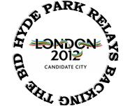
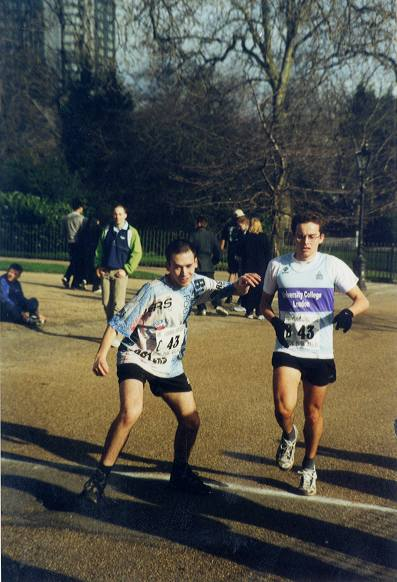
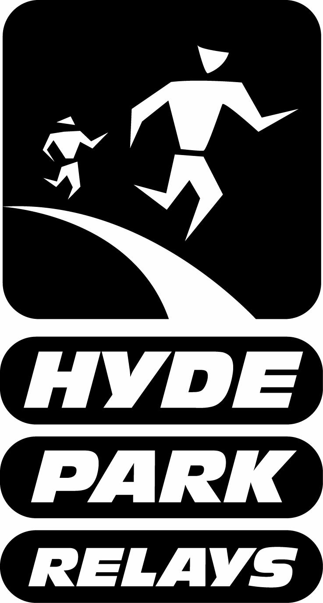

Welcome to the site of Europe's largest student relay race, hosted by Imperial College Union.
Introduction
Event date: 12th February 2005
HYDE PARK RELAYS - IMPERIAL'S BIGGEST SPORTING EVENT - YEAH RIGHT, I'VE NEVER HEARD OF IT!
It is with great pleasure to announce the date of the 57th Hyde Park Relays
|  |  |  |
When I was elected as the 2005 Hyde Park Relays Organiser at last year's cross-country AGM, I dreamt that I would be publicising the biggest and best road relay race yet sad I know but humour me I'm a third year electrical engineering student!
Speaking to some of my mates who also had their ACC AGMs, I found out one of them was first-team rugby captain; another was president of the wakeboarding society. So what about you Pete, have you been elected for anything they asked. With a big grin on my face I proudly told them that I was chair of the Hyde Park Relays committee. Fantastic, well done they'd say, er what is it?! I couldn't believe what I was hearing. This is Europe's largest student relay race I was talking about!
What was going on? I came to the conclusion (after much thought I might add) that either everybody I met was just taking the Mick out me (very possible), I'd been elected to organise a race that wasn't the one I thought it was or nobody from Imperial actually knew what the Hyde Park Relays were.
Investigation was in order. As I had to start somewhere I thought looking at the first Hyde Park Relays might be the best place.
As the name might suggest this prestigious race takes place on a traditional course in the historic setting of Hyde Park, London. Fantastic! Not rocket science I know but at least I knew which Hyde Park we were talking about you know the one right next to Imperial College.
Since it's inception in 1949 the race has provided the opportunity for thousands of students from across Europe to compete in a friendly yet competitive atmosphere. Last year, we welcomed teams from Poland, Holland, Germany, France and Spain as well as over 100 university teams from across the United Kingdom. In total there were around 600 competitors who ran the men each running 3 miles and the women running 2. Great, I was a third of the way there I had been elected for the race that I thought it was.
This left me with either being mocked or Imperial students did not know anything about Hyde Park Relays. Thinking of how I could solve this one, I returned to my electrical engineering department for lectures. And then it hit me, what better place to find out if I was being mocked than speak to students in my department - everybody knows that EEE students don't have a sense of humour and personality between them so I could be quite sure that I would get a serious answer. I asked various people if they had heard of this big event to which the reply was an emphatic, "NO".
So why do so few Imperial Students know about this race? Why didn't ACC teams, departments, lecturers, catering staff etc enter?
The answer is simple - we never told you! The cross-country club has always promoted this event externally but never internally with any real conviction. Many of the world's greatest distance runners have run this race 'before they were famous' but hardly any of the greatest Imperial students have.
Well I will make this race the biggest and best yet and I will let Imperial Students know about it. The race, with its start and changeover point situated on the banks of the Serpentine in Hyde Park, is perfect for those of you who love competition or simply just want to experience racing in such a renowned and beautiful location.
To encourage you guys to put a team(s) in, entry has been slashed to half price - £12 for a team of 6 men (or mixed) and £9 for a team of 4 women (payment can only be with a cheque). This includes the race (obviously), some food, potential prizes if you do well (or really badly) and the exclusive after-race party, where dBs is for once, full of men and women dancing away until 2 o'clock in the morning.
^ TopHow to Enter a Team!
5 simple steps to entering your team:
- 1. Gather a group of friends from your class, sports club or society, just as long as they're Imperial through and through
- (6 for a men's team (£12), 4 for a women's team (£9), or 6 for a mixed team (£12) in any combination)
- 2. Give yourselves a name
- 3. Fill in this form.
- 4. Hand in with cheque to the Student Activities Reception in Beit Quad
- Cheque should be payable to `Imperial College Union'.
- 5. Pick up your race numbers from DB's between 10:00 and 13:00 on 12/02/05
- Note: There'll be excellent prizes for the best and some of the worst) internal teams in each category!
Design the Hyde Park Relays t-shirt and Win £50!
Win £50 in the t-shirt design competition!
Think you can come up with a design that will capture the spirit of the Hyde Park Relays? Then just submit a design to Pete Dickenson
Click here for details.
^ TopOrganising Comittee
Hyde Park Relays Committee,
Imperial College Union,
Beit Quad,
Prince Consort Road,
London,
SW7 2BB.
0207 594 8060 [Telephone]
48060 [Internal Extension]
0207 594 8065 [Fax]
peter.dickenson@ic.ac.uk [Email]